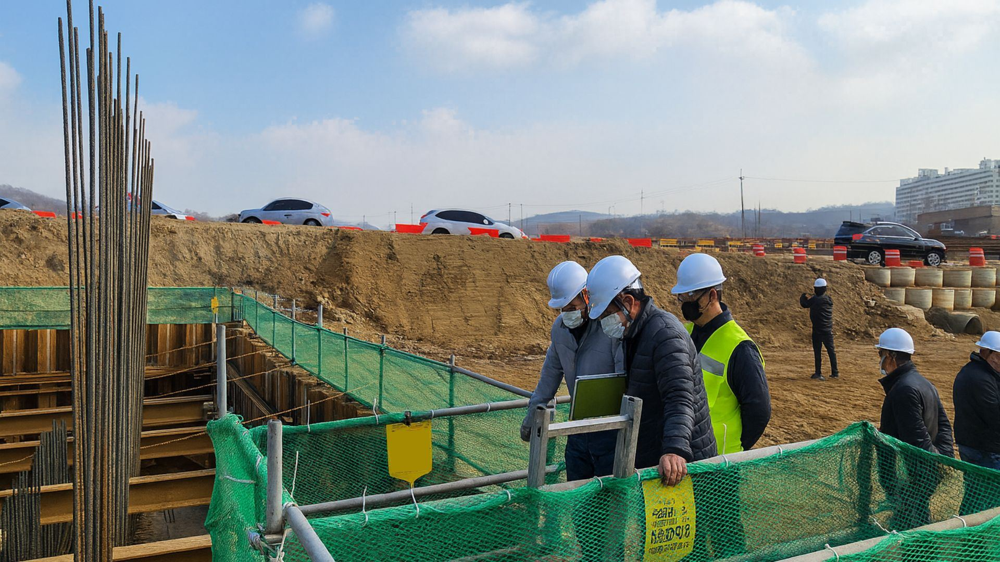

ABOUT US
기업의 내일을 여는
기업의 내일을 여는
오늘의 정책자금
정책자금은 아는 만큼 받습니다. 흩어진 공고와 복잡한 절차를 대신 정리해, 기업이 성장에만 집중할 수 있도록 돕습니다.
WHO WE ARE
몰라서 놓치는 자금이
없도록, 오늘 바로
찾아드립니다.
매년 수조 원 규모의 정책자금이 공고되지만, 기관마다 기준과 일정이 달라 많은 대표님들이 신청 시기를 놓치거나 조건이 맞지 않아 거절을 경험합니다.
오늘의 정책자금은 연매출 4억 이상 사업자를 대상으로, 기업의 업종 · 매출 · 업력 · 재무 상황을 기준으로 신청 가능한 자금을 분류하고, 사업계획서와 서류 준비, 신청 순서 설계까지 한 번에 지원하는 정책자금 전문 컨설팅 기업입니다.

4억+연매출 4억 이상 사업자에 집중해
매출 규모에 맞는 한도를 설계합니다.
매출 규모에 맞는 한도를 설계합니다.
OUR SERVICE
진단부터 사후관리까지,
정책자금의 전 과정을 함께합니다
- 01기업 진단
업종 · 매출 · 업력 · 신용 · 재무제표를 바탕으로 현재 신청 가능한 자금과 예상 한도를 분석합니다.
- 02자금 매칭
중진공 · 신용보증기금 · 기술보증기금 · 지자체 육성자금 중 조건에 맞는 자금과 신청 순서를 설계합니다.
- 03서류 · 사업계획
사업계획서, 자금 사용 계획 등 심사에 필요한 서류를 기업 상황에 맞게 함께 준비합니다.
- 04사후 관리
집행 이후 상환 일정과 추가 자금 · 인증 기회를 관리해 다음 성장 단계까지 연결합니다.
WHY TODAY FUND
오늘의 정책자금이 다른 이유
- 재무 기반 정밀 분석
현직 세무 · 회계 전문가와 함께 재무제표를 평가해, 심사에서 강점이 되는 포인트를 미리 준비합니다.
- 최신 공고 데이터
매달 바뀌는 정부 · 지자체 공고를 수집하고 분류해, 접수 시기와 예산 소진 일정을 놓치지 않습니다.
- 투명한 진행
정식 등록된 경영컨설팅 사업자로서 진행 과정과 비용을 사전에 안내하며, 불법적인 승인 보장 영업을 하지 않습니다.
FREE DIAGNOSIS
연매출 4억 이상이라면
받을 수 있는 정책자금, 지금 확인하세요
업종 · 매출 · 업력만 알려주시면 매출 규모에 맞는 자금과 예상 한도를 정리해 드립니다.